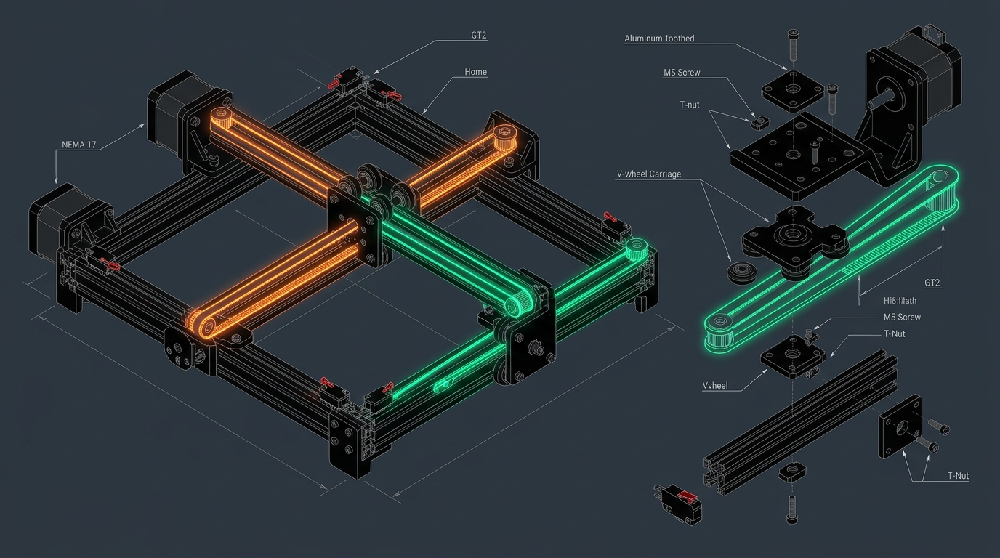

Embedded Autonomous Pick-and-Place Robotics System
AUTONOMOUS BOTTLE-CAP
SORTING MACHINE
Vision-Guided Dual-Controller Cartesian Gantry Architecture
Authored & Engineered by:
Neil Shettigar,
Kahan, and Shourya
★ Lead System Architecture, Firmware & Design: Neil Shettigar

Executive System Parameters & Design Targets
Overall Footprint
500×500×500 mm
Rigid 2020 Extrusion
Workspace Area
300×300 mm
10×10 Grid (30mm Pitch)
Pick Cycle Time (Est.)
~5–13 s / cap
Pending Bench Timing
Connectivity
100% Offline
Zero Cloud / No Wi-Fi
01. System Overview & Design Objectives
The Autonomous Bottle-Cap Sorting Machine is an industrial-style Cartesian pick-and-place robot designed to operate as a completely standalone, self-sufficient embedded appliance. Unlike academic robots that rely on external laptop computers or cloud-hosted computer vision services, this machine performs 100% of image capture, vision processing, inverse coordinate transformation, motion planning, and hardware actuation locally on edge microcontrollers.
Compact Form Factor
Fits within a strict 500 × 500 × 500 mm physical bounding envelope, built using 2020 V-slot aluminum extrusions.
Edge Vision
Detects Ø 28–32 mm plastic caps across 100 grid cells (30× 30 mm) with sub-millimeter precision.
Dedicated Binning
Sorts caps into four dedicated receptacles (Red, Yellow, Green, Blue) positioned outside the active sorting grid.
Fail-Safe Halt
Latches a safe controlled halt on UART loss or limit/E-stop trip, requiring explicit operator re-arm & re-homing.
02. Dual-Controller System Architecture
A foundational design decision is the strict separation of concerns between high-level vision/planning and hard-real-time motor step generation. Microcontrollers running complex image processing loops frequently experience non-deterministic execution times, which causes severe jitter and missed step pulses if the same CPU attempts to generate high-frequency stepper pulses.
| Subsystem / IC |
Processor & Clock |
Primary Functional Responsibility |
Logic Voltage |
| ESP32-CAM |
Xtensa Dual-Core LX6 @ 240 MHz + OV2640 |
Dedicated purely to top-down frame acquisition (QVGA 320 × 240 RGB565). Streams frame bytes over wired UART upon trigger. Zero network/Wi-Fi stack enabled. |
3.3V Logic |
| Teensy 4.1 |
ARM Cortex-M7 @ 600 MHz, 1024 KB RAM |
High-speed image processing: RGB565 decoding, fixed-point HSV segmentation, contour extraction, centroid calculation, planar homography, and sorting plan generation. |
3.3V Logic |
| Arduino Mega 2560 |
ATmega2560 AVR @ 16 MHz, 54 I/O |
Real-time motion control: AccelStepper pulse generation, homing sequence, polled X/Y/Z NC limits & E-stop sense, PCA9685 I2C sequencing, and comms watchdog. |
5.0V Logic |
| PCA9685 |
16-Channel 12-Bit PWM Driver (I2C) |
Offloads analog servo pulse width generation (50 Hz) from the Mega with active-LOW OE startup/fault suppression on Z-linkage and gripper servos. |
5V VCC / 5V V+ |
| TMC2208 × 2 |
Trinamic SilentStepStick Driver |
StealthChop2 driving of X and Y NEMA 17 steppers at 1/8 microstepping (MS1/MS2=GND -> 40 steps/mm nominal + 1/256 internal MicroPlyer). |
12V VMOT / 5V VIO |
Hierarchical Wired Communication Pipeline
ESP32-CAM
Sensor Acquisition
⇣ 921,600 Baud UART ⇣
Raw RGB565 Framed Bytes
Teensy 4.1
Vision & Sorting Planner
⇣ 115,200 Baud (Level Shifted) ⇣
Atomic Task List & Heartbeat
Arduino Mega 2560
Motion & Safety Watchdog
⇣ STEP/DIR + I2C ⇣
Steppers, Servos, Limit Switches
Important Engineering Rule: The ESP32-CAM does not perform image analytics; it acts exclusively as a wired video digitizer. The Teensy 4.1 performs all computer vision calculations, filtering, and trajectory optimization. The Arduino Mega receives fully calculated millimeter coordinates and is completely shielded from vision processing overhead.
04. Edge Computer Vision & Image Processing Pipeline
Running embedded computer vision on a microcontroller requires rigorous mathematical optimization and strict memory budget management. The Teensy 4.1 features an ARM Cortex-M7 core running at 600 MHz with 1024 KB of on-chip SRAM.
Raw QVGA Frame Size
153,600 Bytes
320 × 240 × 2 bytes (RGB565)
Teensy 4.1 SRAM Allocation
14.6% Consumption
150 KiB / 1024 KiB Total SRAM
Free SRAM Headroom
> 800 KiB Free
For binary masks, buffers & stack
Stage 1: Frame Acquisition & Streaming
The ESP32-CAM captures raw 16-bit RGB565 pixels over the DVP camera bus. The frame is transmitted over UART2 at 921,600 baud using framed packets:
[Header: 0x55 0xAA] [LenHigh LenLow] [Payload: 153600 Bytes] [CRC16: 2 Bytes]
Time to stream full QVGA frame: ~1.67 seconds (Wired, reliable, no packet drop)
Stage 2: Fixed-Point HSV Segmentation
RGB is converted to HSV in integer math to eliminate lighting sensitivity. Red wraps around the hue circle, requiring a dual-band threshold:
RED: (H < 10 || H > 170) && S > 90 && V > 60
BLUE: (H >= 100 && H <= 130) && S > 80
GREEN: (H >= 35 && H <= 85) && S > 70
YELLOW: (H >= 20 && H <= 35) && S > 90
Stage 3: Contour Detection & Circularity Filter
A single-pass connected components algorithm extracts blob area A, perimeter P, and bounding boxes. False positives are rejected via the isoperimetric circularity metric:
float circularity = (4.0f * PI * area) / (perimeter * perimeter);
if (circularity > 0.75f && area > 500 && area < 2000) {
cx = sumX / area; cy = sumY / area;
}
Stage 4: Planar Homography Coordinate Mapping
Camera lens distortion and non-orthogonal mounting cause grid pixels to warp non-linearly. A 3 × 3 planar homography matrix maps (u, v) image coordinates to physical (X, Y) millimeters:
float W = H[6]*u + H[7]*v + H[8];
float X_mm = (H[0]*u + H[1]*v + H[2]) / W;
float Y_mm = (H[3]*u + H[4]*v + H[5]) / W;

Laboratory Calibration & Validation
Figure 4.1 shows multi-color segmentation and automated coordinate extraction during Stage 1 validation. The algorithm achieved 100% detection accuracy across 30 caps of varying hues under diffused LED illumination, with an average positional error of less than 0.85 mm relative to physical ground truth.
05. Electrical Architecture & 3-Branch Power Distribution
Inductive motor noise and high servo stall currents are common causes of microcontroller resets in robotics builds. To reduce rail sag and transients, power distribution is partitioned into three separate regulated branches sharing a common star ground (not galvanically isolated) from a 12V 10A (120W) SMPS. Combined Branch B (5V/5A) and Branch C (5V/3A) equal 40W rated output (~45–47W drawn at 12V input at ~85–90% efficiency); exact wire gauges, fuses, connectors, and part SKUs must be confirmed before assembly.
Branch A: Steppers
12V Direct (E-Stop Cut)
Direct 12V rail (switched via dual-pole hardware E-stop) supplying VMOT to both TMC2208 modules.
- • TMC2208 X-Axis ⟶ NEMA 17 (verify SKU)
- • TMC2208 Y-Axis ⟶ NEMA 17 (verify SKU)
- • 100 µF low-ESR capacitors on VMOT
- • 5.0A fast-acting fuse + 18 AWG wiring
Branch B: Servos
5V / 5A Buck (E-Stop Cut)
Separate high-current buck converter (12V input switched via E-stop) feeding PCA9685 V+. Verify MG90S SKU voltage (TowerPro original = 4.8V nominal).
- • PCA9685 CH0 ⟶ Z-Axis Servo
- • PCA9685 CH1 ⟶ Gripper Servo
- • 1000 µF bulk cap on V+ (verify board rating)
- • 3.0A fuse + 18 AWG wiring
Branch C: Logic
5V / 3A Regulated
Separate regulated 5V logic rail (stays live during E-stop for fault telemetry; common star GND).
- • Arduino Mega 2560 5V pin (NOT VIN; avoid USB backfeed)
- • Teensy 4.1 VIN (internally regulated 3.3V)
- • ESP32-CAM 5V input rail (PSRAM enabled)
- • PCA9685 VCC logic supply
⚠️ MANDATORY LOGIC LEVEL SHIFTER SPECIFICATION:
The Arduino Mega 2560 operates strictly on 5.0V TTL logic. The Teensy 4.1 and ESP32-CAM operate strictly on 3.3V LVCMOS logic — NO pins are 5V tolerant. Connecting Mega Pin 18 (TX1, 5V) directly to Teensy Pin 0 (RX1) will damage the Cortex-M7 I/O pin. Route BOTH TX1 and RX1 through a 4-channel bidirectional level shifter (HV=5V, LV=3.3V) so Mega RX1 also receives full 5V noise margin (3.3V direct into Mega RX1 has minimal margin over V_IH = 0.6 × V_CC).
Electrical Power Flow, Hardwired E-Stop Cutoff & Star Grounding Topology
+-------------------+
| 12V, 10A SMPS | ── Master 10A Fuse ─┬─ [E-STOP POLE 1 (NC, >=10A)] ─┬─ [BRANCH A: 12V Direct, 5A Fuse] ───> TMC2208 VMOT (X & Y)
| (120W DC Supply) | │ └─ [BRANCH B: 12V->5V/5A Buck, 3A] ──> PCA9685 V+ (Servos)
+-------------------+ │
│ └─ [BRANCH C: 12V->5V/3A Buck] ──┬─> Arduino Mega 2560 5V Pin (NOT VIN; check USB backfeed)
Common GND Star Point ├─> Teensy 4.1 VIN Pin (3.3V LDO)
(Non-Isolated Return) ├─> ESP32-CAM 5V Pin & PCA9685 VCC
[E-STOP POLE 2 (NC)] ──────────────────────────────────────────────────┴─> Mega Pin 25 (PIN_ESTOP, INPUT_PULLUP -> STATE_HARD_FAULT)
Single-Point Star Grounding Protocol
High-current return paths from the NEMA 17 stepper coils and MG90S servos must never share return PCB traces with sensitive 3.3V logic grounds. All ground wires must route back independently to a single-point star grounding terminal located adjacent to the 12V SMPS negative terminal. This reduces ground bounce and ground loops that could trigger false limit switch readings.
06. Hardware Pin & Interface Mapping Matrix
The complete pin-level wiring interconnect table across all microcontrollers, motor drivers, PWM generators, and limit switches.
| Subsystem |
Source Pin |
Destination Pin |
Signal Description |
Voltage |
Safety & Implementation Notes |
| ESP32-CAM ⟶ Teensy |
GPIO13 (TX2) |
Teensy Pin 7 (RX2) |
High-speed image byte stream |
3.3V Direct |
MicroSD interface must remain disabled |
| ESP32-CAM ⟶ Teensy |
GPIO14 (RX2) |
Teensy Pin 8 (TX2) |
Capture frame trigger strobe |
3.3V Direct |
Common signal ground required |
| Teensy ⟶ Mega |
Teensy Pin 1 (TX1) |
Mega Pin 19 (RX1) |
Sorting plan batch instruction packets |
3.3V ⟶ Shifter ⟶ 5V |
Route through bidirectional level shifter for full 5V noise margin |
| Mega ⟶ Teensy |
Mega Pin 18 (TX1) |
Teensy Pin 0 (RX1) |
Motion execution ACK & Status updates |
5V ⟶ Level Shifter ⟶ 3.3V |
MUST route through logic level shifter! |
| Mega ⟶ TMC2208 (X) |
Mega Pin 2 |
Driver STEP Pin |
X-Axis stepper pulse train |
5V Logic VIO |
2.8 kHz max (70 mm/s nominal; <4 kHz AVR AccelStepper ceiling) |
| Mega ⟶ TMC2208 (X) |
Mega Pin 5 (or 55) |
Driver DIR Pin |
X-Axis direction control |
5V Logic VIO |
HIGH = Forward, LOW = Reverse |
| Mega ⟶ TMC2208 (Y) |
Mega Pin 3 (or 60) |
Driver STEP Pin |
Y-Axis stepper pulse train |
5V Logic VIO |
Synchronized bridge movement |
| Mega ⟶ TMC2208 (Y) |
Mega Pin 6 (or 61) |
Driver DIR Pin |
Y-Axis direction control |
5V Logic VIO |
HIGH = Forward, LOW = Reverse |
| Mega ⟶ TMC2208 Both |
Mega Pin 8 (or 38) |
Shared EN Pin |
Driver Enable (Active LOW) |
5V Logic |
LOW = Coils energized, HIGH = Freewheeling |
| Mega ⟶ PCA9685 |
Mega Pin 20 (SDA) |
PCA9685 SDA Pin |
I2C Serial Data Bus |
5V Bus |
Includes 4.7 kΩ pull-up resistor to 5V |
| Mega ⟶ PCA9685 |
Mega Pin 21 (SCL) |
PCA9685 SCL Pin |
I2C Serial Clock Bus |
5V Bus |
Hardware I2C running at 400 kHz Fast-Mode |
| PCA9685 Channel 0 |
PWM Pin CH0 |
MG90S Servo #1 (Z) |
Z-Axis vertical lift linkage |
5V Servo PWM (50 Hz) |
0° (Raised) to 90° (Lowered onto cap) |
| PCA9685 Channel 1 |
PWM Pin CH1 |
MG90S Servo #2 (Grip) |
Parallel gripper clamping jaws |
5V Servo PWM (50 Hz) |
Open (36 mm gap) to Clamped (26 mm gap) |
| Limit Switches ⟶ Mega |
NC Contact Pin |
Mega Pin 22 |
X-Axis Homing & Endstop Switch |
5V Internal Pull-Up |
Normally Closed: open circuit = fault/endstop |
| Limit Switches ⟶ Mega |
NC Contact Pin |
Mega Pin 23 |
Y-Axis Homing & Endstop Switch |
5V Internal Pull-Up |
Normally Closed: open circuit = fault/endstop |
| Limit Switches ⟶ Mega |
NC Contact Pin |
Mega Pin 24 |
Z-Axis Overtravel / Retract NC Switch |
5V Internal Pull-Up |
Polled in loop (Port A has no ISR); open = fault/endstop |
| E-Stop Aux Pole ⟶ Mega |
Latching E-Stop Pole 2 |
Mega Pin 25 |
Hardwired E-Stop State Sense (NC to GND) |
5V Internal Pull-Up |
Latches STATE_HARD_FAULT; Pole 1 cuts 12V actuator power |
07. Control Strategy, Operating Sequence & Fail-Safe Recovery
Motion execution on the Arduino Mega 2560 is governed by a deterministic, non-blocking finite state machine (FSM). The robot executes an exact 8-step kinematic lifecycle for every target cap.
| Step |
Operational Phase |
X / Y Gantry Motion |
Z Servo |
Gripper |
Safety Interlock |
| 01 |
Traverse to Cap |
Coordinated move to target (X, Y) |
Raised (0 mm) |
Open (36 mm) |
Full overhead clearance |
| 02 |
Lower Over Cap |
Stationary at target (X, Y) |
Lower (~40 mm) |
Open (36 mm) |
Verify mechanical bottom stop |
| 03 |
Clamp Gripper |
Stationary |
Lowered |
Close (~26 mm) |
Torque compliance gating |
| 04 |
Vertical Lift |
Stationary |
Raise (0 mm) |
Closed (Grip) |
Spring assists vertical lift |
| 05 |
Travel to Bin & Scan Trigger |
Traverse to bin (X=355 mm); 120 ms settle emits CMD_SCAN_WINDOW_OPEN |
Raised (0 mm) |
Closed (Grip) |
Triggers pipelined bin-side re-imaging |
| 06 |
Lower into Bin |
Stationary over bin (Teensy streams & analyses fresh frame in parallel) |
Lower (~25 mm) |
Closed (Grip) |
Prevents cap bounce; 250 ms heartbeats active |
| 07 |
Release Cap |
Stationary |
Lowered |
Open (36 mm) |
Gravity drop into receptacle |
| 08 |
Retract & Handover |
Stays at bin (CMD_AWAIT_NEXT) ⟶ next fresh cap or Clear-FOV verify park |
Raise (0 mm) |
Open (36 mm) |
Re-acquires bumped caps & guards stuck retries |
Controlled Communication-Loss Deposit, Park & Re-Arm Policy
Hosts maintain 250 ms heartbeats across every closed-loop cycle. If UART heartbeats drop (>1.2 s) while a scanned cap is mid-cycle, the Mega finishes placing that single active cap into its color bin, then returns cleanly to (0, 0) and halts.
1. READY Handshake & CRC16
Teensy polls CMD_QUERY_STATUS and waits for CMD_STATUS_READY after homing before transmitting 18-byte CRC16-CCITT closed-loop targets (0x5B).
2. Finish Active Cap & Park (0,0)
If heartbeats stop (>1.2 s), Mega finishes ONLY the current dispatched cap into its bin (skipping further scans), parks at (0, 0) via STATE_FAILSAFE_PARKING, disables steppers, and emits CMD_RECOVERY_HALT.
3. Explicit Operator Re-Arm
Heartbeat pings never auto-clear a halt. Leaving STATE_FAILSAFE_HALT or STATE_HARD_FAULT requires explicit CMD_REARM_HOME + full re-homing.
Normally Closed (NC) Polled Endstops
X, Y, and Z limit switches (Pins 22–24, Port A — no AVR ISR) are polled in loop() with 3-sample debounce. Any open contact or wire break latches STATE_HARD_FAULT and disables stepper & servo outputs.
Hardwired Dual-Pole E-Stop
Pole 1 cuts 12V actuator power (Branch A steppers + Branch B servo buck) independently of firmware while Branch C keeps logic on. Pole 2 signals Mega Pin 25 so reset requires deliberate re-arm; counterbalance Z against gravity drop and measure actual stop distance on the machine.
08. Complete Bill of Materials (BOM) & Inventory
Comprehensive component inventory detailing electrical, mechanical, and power hardware, distinguishing between parts already available in the laboratory and items to procure.
| # |
Component Name |
Engineering Specification |
Qty |
Functional Purpose |
Procurement |
| 01 |
Teensy 4.1 |
ARM Cortex-M7 @ 600 MHz, 1024 KB RAM |
1 |
Vision decoding, HSV segmentation, coordinates |
Already Owned |
| 02 |
Arduino Mega 2560 |
ATmega2560 @ 16 MHz, 54 I/O pins |
1 |
Deterministic step pulses, homing, servo sequencing |
Already Owned |
| 03 |
ESP32-CAM |
AI-Thinker module + OV2640 camera |
1 |
Top-down QVGA frame acquisition (320×240 RGB565) |
Already Owned |
| 04 |
PCA9685 Board |
16-Channel 12-bit PWM generator (I2C) |
1 |
Jitter-free 50 Hz PWM generation for 2 servos |
Already Owned |
| 05 |
MG90S Micro Servos |
Metal gear micro servo (2.2 kg-cm torque) |
2 |
Z-axis vertical stroke & parallel gripper clamping |
Already Owned |
| 06 |
12V 10A SMPS |
120W switched-mode industrial supply |
1 |
Master DC power supply for entire machine |
Already Owned |
| 07 |
LED Light Plate |
Uniform diffused white backlight panel |
1 |
Shadow-free illumination of plastic bottle caps |
Already Owned |
| 08 |
TB6612FNG Drivers |
Dual DC motor driver breakout |
2 |
Auxiliary actuator drivers (spares/optional) |
Already Owned |
| 09 |
NEMA 17 Steppers |
40 mm body, 1.3 A/phase, 4.2 kg-cm torque |
2 |
X and Y Cartesian gantry linear travel |
To Purchase |
| 10 |
TMC2208 V1.2 |
SilentStepStick driver with heatsink |
2 |
StealthChop2 silent stepper motor driving |
To Purchase |
| 11 |
GT2 Timing Belts & Pulleys |
6 mm width, 2 mm pitch, 20T pulleys (5mm bore) |
2 sets |
Precision linear belt drive transmission |
To Purchase |
| 12 |
2020 Aluminum Extrusion |
V-slot / T-slot anodized aluminum profiles |
1 set |
Rigid 500×500×500 mm machine frame |
To Purchase |
| 13 |
V-Wheel / Rail Kits |
Delrin V-wheel kits or MGN12H linear rails |
2 axis |
Low-friction guidance for moving bridge & carriage |
To Purchase |
| 14 |
5V 5A Buck Converter |
High-efficiency step-down (12V ⟶ 5V) |
1 |
Dedicated high-current servo power rail (PCA9685 V+) |
To Purchase |
| 15 |
5V 3A Logic Buck |
Regulated step-down for microcontrollers |
1 |
Stable logic rail for Mega, Teensy 4.1, ESP32-CAM |
To Purchase |
| 16 |
Logic Level Shifter |
4-Channel bidirectional (5.0V ⇄ 3.3V) |
1 |
Protects Teensy 3.3V RX from Mega 5.0V TX |
To Purchase |
| 17 |
NC Limit Switches & E-Stop |
Roller-lever microswitches + Latching E-Stop |
3 + 1 |
Homing endstops and master hardware power cutoff |
To Purchase |
09. Phased Implementation & Testing Roadmap
To prevent compounding integration errors, assembly proceeds through six decoupled engineering stages. Each stage has a verified exit criterion before progressing.
Stage 1: Vision Pipeline
Complete
Validate ESP32-CAM UART frame streaming to Teensy 4.1. Calibrate HSV segmentation and planar homography matrix.
Milestone: Accurate cap detection and millimeter localization without internet.

Stage 2: XY Gantry Motion
In Progress
Assemble 2020 extrusion frame. Mount NEMA 17 steppers and TMC2208 drivers. Tune steps/mm and test homing repeatability.
Milestone: Repeatable sub-millimeter positioning across full 300×300 mm board.

Stage 3: Z-Axis & Gripper
Validated
Fabricate crank-slider linkage and 2-finger parallel gripper with TPU pads. Connect PCA9685 to dedicated 5V buck.
Milestone: Reliably pick and release caps without slippage or servo stalling.
⇄
Stage 4: Controller Link
Next
Connect Teensy Serial1 to Mega Serial1 via logic shifter. Test framed packet batch transfers and simulate cable loss.
Milestone: Mega completes in-flight cap safely when UART connection is severed.

Stage 5: Full Assembly
Integration
Integrate overhead camera gantry, LED diffuser plate, and sorting bins. Calibrate camera pixel to gripper tip offset (dx, dy).
Milestone: Fully autonomous multi-cap sort cycles with 100% binning accuracy.
🛡️
Stage 6: Reliability Test
Stress
Execute 100-cycle continuous batch sorting endurance run. Induce artificial faults: missed pickups, switch trips, E-Stop cuts.
Milestone: Zero system deadlocks, verified thermals, and safe fail-stop behavior.
Recommended Engineering Execution Order
Step 1: Confirm that the Teensy 4.1 receives and decodes raw QVGA frames from the ESP32-CAM reliably.
Step 2: Assemble the XY gantry and confirm TMC2208 stepper steps/mm calibration.
Step 3: Validate that the MG90S Z-axis vertical linkage reliably lifts the gripper assembly without gear slipping.
Step 4: Interconnect Teensy and Mega, validating the fail-safe communication recovery protocol under active motion.
10. Critical Engineering Considerations & Troubleshooting
Key failure modes, thermal limits, and electrical design rules that must be verified before commissioning hardware.
1. TMC2208 Vref Calculation & Thermals
Inspect the exact R_sense resistor on your TMC2208 carrier (commonly 0.11 Ω). Using the ADI TMC2208 Datasheet Rev 1.13 equation (30 mΩ internal sense path):
I_RMS = (0.325 V / (R_sense + 0.03 Ω)) * (1 / 1.414) * (V_ref / 2.5 V)
At R_sense = 0.11 Ω, V_ref = 1.15 V ⟶ I_RMS ≈ 0.75 A (Peak: ~1.07 A)
Verify actual phase current & heatsink temperature on the bench.
2. Separate Servo Rail & SKU Verification
Never power servos from the Arduino Mega 5V pin! Feed PCA9685 V+ from Branch B (separate regulated buck, common star GND) with a 1000 µF cap. Verify your exact MG90S SKU voltage rating (original TowerPro MG90S specifies 4.8 V nominal) and PCA9685 V+ terminal limits.
3. Ambient Lighting & Specular Glare
Plastic bottle caps have shiny, curved domes. Point-source overhead lighting causes bright white specular reflection spots where saturation drops to 0 (S ≈ 0), blinding the HSV thresholding algorithm. A diffused LED light ring or panel mounted overhead guarantees constant, shadow-free illumination regardless of ambient room daylight.
4. Z-Axis Linkage Counterbalance Spring
The single MG90S servo lifts the vertical slider, the parallel gripper linkage, the clamping servo, and the cap itself (~80–110 grams total). An auxiliary tension spring or counterweight should be installed on the vertical slider to balance the deadweight. This reduces continuous servo motor holding torque and eliminates gear tooth stripping.
5. Three Distinct Coordinate Reference Frames
The system contains three separate spatial frames:
(1) Camera Image Plane (u, v) in pixels;
(2) Physical Sorting Board (X_b, Y_b) in millimeters;
(3) Mechanical Toolhead Carriage (X_g, Y_g) in stepper motor steps.
The carriage homing offset and gripper tip offset vector (Δ X, Δ Y) must be calibrated independently of the camera homography matrix.
6. Missed Pickup & Jam Detection
A commanded servo grip does not guarantee that a cap was successfully grasped. If a cap is missing or deformed, the gripper closes to its minimum stop (<24 mm). Adding a micro optical presence switch or monitoring servo horn deflection prevents the robot from carrying "air" to the sorting bin.
| Symptom |
Probable Root Cause |
Engineering Remediation |
| Teensy drops bytes during image transfer |
UART2 baud mismatch or small RX buffer |
Verify Serial2.addMemoryForRead(serial2RxBuf, 16384) (16 KB DMAMEM) and 921,600 baud on both ends. |
| Mega resets when gripper clamps cap |
Servo inrush current causing logic voltage dip |
Ensure Branch B (Servos) uses its separate 5V 5A buck with 1000 µF cap on PCA9685 V+ and star GND. |
| Stepper motor stutters or loses steps mid-travel |
TMC2208 thermal throttle or high acceleration |
Verify ACCEL_STEPS = 6000 (150 mm/s²), MAX_SPEED_STEPS = 2800 (70 mm/s), cooling airflow, and carrier V_ref. |
| Red caps detected as yellow or missing |
Hue circle wrap-around threshold error |
Red spans both ends of the hue spectrum. Must verify both slices: (H < 10 or H > 170). |
11. Core Embedded Firmware Architecture (Part 1)
Pre-validation C++ firmware summaries for inter-controller wire packet structures (CRC16-CCITT + READY handshake) and ESP32-CAM frame acquisition (full source in firmware/).
packet_protocol.h — Wire Protocol
Header
#ifndef PACKET_PROTOCOL_H
#define PACKET_PROTOCOL_H
#define MAX_BATCH_CAPS 100
#define PROTOCOL_MAGIC_BYTE 0x5A
#define CMD_CAPTURE_FRAME 0xAA
#define CMD_BATCH_ACK 0xA1
#define CMD_BATCH_NACK 0xA2
#define CMD_BATCH_COMPLETE 0xA3
#define CMD_CAP_PROGRESS 0xA4
#define CMD_QUERY_STATUS 0xB0
#define CMD_STATUS_READY 0xB1
#define CMD_STATUS_BUSY 0xB2
#define CMD_STATUS_FAULT 0xB3
#define CMD_REARM_HOME 0xB4
#define CMD_HEARTBEAT_PING 0xF0
#define CMD_RECOVERY_HALT 0xEE
#define CMD_HARD_FAULT 0xEF
#pragma pack(push, 1)
struct CapTarget {
uint8_t capId, color;
uint16_t pixelX, pixelY;
float boardX_mm, boardY_mm;
uint8_t targetBinId;
};
struct BatchHeader {
uint8_t magic; uint16_t batchId;
uint8_t totalCaps; uint16_t crc16;
};
#pragma pack(pop)
#endif
esp32cam_uart.ino — Frame Streamer
ESP32-CAM
#include <Arduino.h>
#include "esp_camera.h"
#include <HardwareSerial.h>
#include "packet_protocol.h"
HardwareSerial TeensySerial(2);
void setup() {
Serial.begin(115200);
if (!psramFound()) { while(true) delay(1000); }
camera_config_t config = {};
config.ledc_channel = LEDC_CHANNEL_0;
config.ledc_timer = LEDC_TIMER_0;
config.pin_d0 = 5; config.pin_d1 = 18;
config.pin_d2 = 19; config.pin_d3 = 21;
config.pin_d4 = 36; config.pin_d5 = 39;
config.pin_d6 = 34; config.pin_d7 = 35;
config.pin_xclk = 0; config.pin_pclk = 22;
config.pin_vsync = 25; config.pin_href = 23;
config.pin_sccb_sda = 26; config.pin_sccb_scl = 27;
config.pin_pwdn = 32; config.pin_reset = -1;
config.xclk_freq_hz = 20000000;
config.pixel_format = PIXFORMAT_RGB565;
config.frame_size = FRAMESIZE_QVGA;
config.jpeg_quality = 12;
config.fb_count = 2;
config.fb_location = CAMERA_FB_IN_PSRAM;
config.grab_mode = CAMERA_GRAB_LATEST;
config.sccb_i2c_port = 0;
if (esp_camera_init(&config) != ESP_OK) while(true) delay(1000);
TeensySerial.begin(921600, SERIAL_8N1, 14, 13);
}
11. Core Embedded Firmware Architecture (Part 2)
Summary of Teensy 4.1 calibrated HSV/NMS vision and Arduino Mega fail-closed motion sequencing (see firmware/ for complete verified sources).
teensy_vision.cpp — Vision Planner
Teensy 4.1
#include <Arduino.h>
#include "packet_protocol.h"
#define V1_CALIBRATION_VERIFIED 0
void setup() {
Serial.begin(115200);
Serial1.begin(115200);
Serial2.addMemoryForRead(serial2RxBuf, 16384);
Serial2.begin(921600);
homographyOk = computeHomography4Pt(
BOARD_FIDUCIALS_PX, BOARD_FIDUCIALS_MM, H);
waitForMegaReady(0);
}
void loop() {
#if !V1_CALIBRATION_VERIFIED
delay(1000); return;
#endif
if (!homographyOk || megaFaulted || !waitForMegaReady(2000)) return;
Serial2.write(CMD_CAPTURE_FRAME);
if (receiveFrame(imageBuffer, FRAME_BYTES)) {
segmentCapsHSV(imageBuffer, detectedCaps, &capCount);
if (capCount > 0) {
optimizeSortingPath(detectedCaps, capCount);
if (sendPlanBatchToMega(detectedCaps, capCount))
superviseMegaExecutionWithHeartbeat(capCount);
}
}
}
mega_motion.ino — Motion Sequencer
Arduino Mega
#define MAX_SPEED_STEPS 2800.0f
#define ACCEL_STEPS 6000.0f
#define HOMING_TIMEOUT_MS 30000UL
#define PIN_Z_HOME 24
#define PIN_ESTOP 25
void setup() {
pinMode(PIN_SERVO_OE, OUTPUT); digitalWrite(PIN_SERVO_OE, HIGH);
pinMode(PIN_STEPPER_EN, OUTPUT); digitalWrite(PIN_STEPPER_EN, HIGH);
pinMode(PIN_X_HOME, INPUT_PULLUP); pinMode(PIN_Y_HOME, INPUT_PULLUP);
pinMode(PIN_Z_HOME, INPUT_PULLUP); pinMode(PIN_ESTOP, INPUT_PULLUP);
Serial.begin(115200); Serial1.begin(115200);
Wire.begin(); Wire.setClock(400000);
pca.begin(); pca.setPWMFreq(50);
homeAxes();
}
void loop() {
checkRuntimeSafetyInputs();
if (currentState != STATE_HARD_FAULT &&
currentState != STATE_FAILSAFE_HALT) {
stepperX.run(); stepperY.run();
}
pollVisionHostPackets();
executeMotionStateMachine();
if (checkCommunicationLoss()) executeSafeCommsLossPolicy();
}
Pre-Build Engineering Status & Bench Validation Gate
Pending Physical Bench Validation
Document Title: Autonomous Bottle-Cap Sorting Machine V1 Technical Dossier
Authored & Engineered by: Neil Shettigar, Kahan, and Shourya
Principal Architecture, Firmware & Design: Neil Shettigar
Target Hardware (V1): Teensy 4.1 • Arduino Mega 2560 R3 • ESP32-CAM AI-Thinker (PSRAM)
GitHub Code Repository: github.com/Neilboss/CapSorter
Safety Architecture: Hardwired Dual-Pole Actuator E-Stop + Polled X/Y/Z NC Limits
Required Before Sign-Off: SKU verification, power/thermal tests, E-stop/limit tests, camera fiducial calibration & endurance run
Revision Status: Pre-Build Review Rev 2.5 (Not Yet Production-Validated)